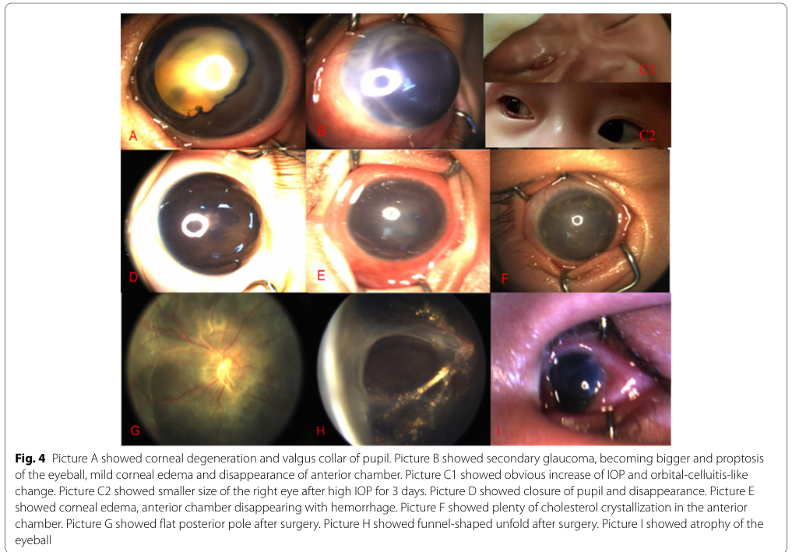

Familial exudative vitreoretinopathy (FEVR) is a rare inherited vitreoretinopathy characterized by incomplete or arrested vascularization of the peripheral retina. The shared core mechanism is impaired Norrin/beta-catenin (Wnt) signaling in retinal vascular endothelial cells, which is required for developmental angiogenesis of the peripheral retina and establishment of the blood-retina barrier. The resulting peripheral avascular zone causes retinal ischemia, which drives compensatory neovascularization, exudation, hemorrhage, vitreoretinal traction, and tractional or exudative retinal detachment. FEVR is genetically heterogeneous: most cases are autosomal dominant (FZD4, LRP5, TSPAN12), but autosomal recessive (LRP5, TSPAN12) and X-linked recessive (NDP) forms occur, and KIF11 variants produce a FEVR-like retinal phenotype within a broader microcephaly-lymphedema-chorioretinal dysplasia spectrum. Expressivity is highly variable, ranging from an asymptomatic avascular periphery detectable only by fluorescein angiography to bilateral blindness, even within the same family. NDP variants additionally cause Norrie disease (a severe allelic disorder), and recessive LRP5 disease can be accompanied by reduced bone mineral density.
Ask a research question about Familial Exudative Vitreoretinopathy. OpenScientist will conduct autonomous deep research using the Disorder Mechanisms Knowledge Base and PubMed literature (typically 10-30 minutes).
Do not include personal health information in your question. Questions and results are cached in your browser's local storage.
name: Familial Exudative Vitreoretinopathy
creation_date: "2026-06-17T00:00:00Z"
category: Mendelian
description: >-
Familial exudative vitreoretinopathy (FEVR) is a rare inherited
vitreoretinopathy characterized by incomplete or arrested vascularization of
the peripheral retina. The shared core mechanism is impaired Norrin/beta-catenin
(Wnt) signaling in retinal vascular endothelial cells, which is required for
developmental angiogenesis of the peripheral retina and establishment of the
blood-retina barrier. The resulting peripheral avascular zone causes retinal
ischemia, which drives compensatory neovascularization, exudation, hemorrhage,
vitreoretinal traction, and tractional or exudative retinal detachment. FEVR is
genetically heterogeneous: most cases are autosomal dominant (FZD4, LRP5,
TSPAN12), but autosomal recessive (LRP5, TSPAN12) and X-linked recessive (NDP)
forms occur, and KIF11 variants produce a FEVR-like retinal phenotype within a
broader microcephaly-lymphedema-chorioretinal dysplasia spectrum. Expressivity
is highly variable, ranging from an asymptomatic avascular periphery detectable
only by fluorescein angiography to bilateral blindness, even within the same
family. NDP variants additionally cause Norrie disease (a severe allelic
disorder), and recessive LRP5 disease can be accompanied by reduced bone
mineral density.
disease_term:
preferred_term: familial exudative vitreoretinopathy
term:
id: MONDO:0019516
label: exudative vitreoretinopathy
synonyms:
- FEVR
- Criswick-Schepens syndrome
parents:
- Ophthalmological Disease
- Retinal vascular disorder
has_subtypes:
- name: FZD4-FEVR
display_name: FZD4-Related FEVR (EVR1, autosomal dominant)
description: >-
Autosomal dominant FEVR caused by heterozygous pathogenic variants in FZD4,
encoding the frizzled-4 receptor, the obligate Norrin receptor. One of the
most common molecularly defined forms of adFEVR. Variants impair Norrin/FZD4
signaling and peripheral retinal vascularization.
genes:
- preferred_term: FZD4
term:
id: hgnc:4042
label: FZD4
- name: LRP5-FEVR
display_name: LRP5-Related FEVR (EVR4, AD or AR; with reduced bone density)
description: >-
FEVR caused by pathogenic variants in LRP5, encoding the Wnt co-receptor
low-density lipoprotein receptor-related protein 5. Inherited dominantly or
recessively; recessive disease is frequently accompanied by reduced bone
mineral density, reflecting LRP5's role in skeletal Wnt signaling.
genes:
- preferred_term: LRP5
term:
id: hgnc:6697
label: LRP5
- name: TSPAN12-FEVR
display_name: TSPAN12-Related FEVR (EVR5)
description: >-
FEVR caused by variants in TSPAN12, encoding tetraspanin-12, an essential
co-receptor of the Norrin/FZD4 complex that amplifies FZD4 ligand selectivity
and signaling. Mostly autosomal dominant.
genes:
- preferred_term: TSPAN12
term:
id: hgnc:21641
label: TSPAN12
- name: NDP-FEVR
display_name: NDP-Related FEVR (EVR2, X-linked recessive)
description: >-
X-linked recessive FEVR caused by hemizygous variants in NDP, encoding the
secreted ligand Norrin. NDP is allelic with Norrie disease; FEVR represents
the milder end of the NDP phenotypic spectrum, affecting predominantly males.
genes:
- preferred_term: NDP
term:
id: hgnc:7678
label: NDP
- name: KIF11-FEVR
display_name: KIF11-Related FEVR (MLCRD/CDMMR spectrum)
description: >-
Autosomal dominant FEVR-like retinal phenotype caused by heterozygous variants
in KIF11, encoding a kinesin motor. Often part of a broader syndrome
(microcephaly, lymphedema, chorioretinal dysplasia), and FEVR cases should be
inspected for microcephaly as a marker of KIF11-related disease.
genes:
- preferred_term: KIF11
term:
id: hgnc:6388
label: KIF11
inheritance:
- name: Autosomal dominant inheritance
inheritance_term:
preferred_term: Autosomal dominant inheritance
term:
id: HP:0000006
label: Autosomal dominant inheritance
description: >-
The most common mode of inheritance for FEVR, seen with FZD4, LRP5, TSPAN12,
and KIF11 variants. Penetrance is reduced and expressivity is highly variable.
evidence:
- reference: PMID:29633588
supports: SUPPORT
evidence_source: HUMAN_CLINICAL
snippet: "these can be inherited in an autosomal dominant (most common), autosomal recessive, and X-linked recessive fashion"
explanation: A clinical review confirms autosomal dominant inheritance is the most common FEVR mode.
- reference: PMID:20301326
supports: SUPPORT
evidence_source: HUMAN_CLINICAL
snippet: "Offspring of an affected individual are at a 50% risk of inheriting the pathogenic variant, but many individuals with adFEVR can be asymptomatic because of reduced penetrance."
explanation: GeneReviews genetic counseling section confirms 50% recurrence risk and reduced penetrance in autosomal dominant FEVR.
- name: X-linked recessive inheritance
inheritance_term:
preferred_term: X-linked recessive inheritance
term:
id: HP:0001419
label: X-linked recessive inheritance
description: >-
The NDP-related form is inherited in an X-linked recessive manner, affecting
predominantly males; NDP is allelic with Norrie disease.
evidence:
- reference: PMID:29633588
supports: SUPPORT
evidence_source: HUMAN_CLINICAL
snippet: "these can be inherited in an autosomal dominant (most common), autosomal recessive, and X-linked recessive fashion"
explanation: A clinical review confirms the X-linked recessive FEVR mode of inheritance (NDP).
- name: Autosomal recessive inheritance
inheritance_term:
preferred_term: Autosomal recessive inheritance
term:
id: HP:0000007
label: Autosomal recessive inheritance
description: >-
Recessive FEVR occurs with biallelic LRP5 (and TSPAN12) variants; recessive
LRP5 disease is associated with reduced bone mineral density.
evidence:
- reference: PMID:16929062
supports: SUPPORT
evidence_source: HUMAN_CLINICAL
snippet: "homozygous mutations in LRP5 have recently been reported as underlying the recessive form of this disease"
explanation: Documents the autosomal recessive form of FEVR caused by biallelic LRP5 mutations.
genetic:
- name: FZD4 frizzled-4 receptor defect
gene_term:
preferred_term: FZD4
modifier: DECREASED
term:
id: hgnc:4042
label: FZD4
relationship_type: CAUSATIVE
notes: >-
FZD4 encodes frizzled-4, the obligate Norrin receptor. Loss-of-function
variants in humans and Fz4 knockout mice produce similar incomplete retinal
vascularization, establishing Norrin and FZD4 as a high-affinity
ligand-receptor pair controlling retinal angiogenesis.
evidence:
- reference: PMID:15035989
supports: SUPPORT
evidence_source: MODEL_ORGANISM
snippet: "One form of \nFEVR is caused by defects in Frizzled-4 (Fz4), a presumptive Wnt receptor."
explanation: Identifies FZD4 (Fz4) defects as a cause of FEVR.
- name: NDP Norrin ligand defect
gene_term:
preferred_term: NDP
modifier: DECREASED
term:
id: hgnc:7678
label: NDP
relationship_type: CAUSATIVE
notes: >-
NDP encodes Norrin, the secreted cysteine-knot ligand for FZD4. NDP variants
cause X-linked FEVR and the allelic, more severe Norrie disease.
evidence:
- reference: PMID:20340138
supports: SUPPORT
evidence_source: HUMAN_CLINICAL
snippet: "mutations in the gene encoding NDP, a ligand \nfor these Wnt receptors, cause Norrie disease and FEVR"
explanation: Confirms NDP (Norrin) ligand mutations cause both FEVR and the allelic Norrie disease.
- name: LRP5 Wnt co-receptor defect
gene_term:
preferred_term: LRP5
modifier: DECREASED
term:
id: hgnc:6697
label: LRP5
relationship_type: CAUSATIVE
notes: >-
LRP5 encodes a Wnt/Norrin co-receptor. Pathogenic variants cause FEVR;
recessive disease additionally produces reduced bone mineral density,
reflecting LRP5's dual role in retinal vascular and skeletal Wnt signaling.
evidence:
- reference: PMID:16929062
supports: SUPPORT
evidence_source: HUMAN_CLINICAL
snippet: "A homozygous LRP5 missense mutation, G550R, was \nidentified in all affected individuals"
explanation: Identifies a homozygous LRP5 mutation segregating with recessive FEVR and reduced bone density.
- name: TSPAN12 co-receptor defect
gene_term:
preferred_term: TSPAN12
modifier: DECREASED
term:
id: hgnc:21641
label: TSPAN12
relationship_type: CAUSATIVE
notes: >-
TSPAN12 encodes tetraspanin-12, an essential component of the Norrin receptor
complex. FEVR-linked TSPAN12 mutations prevent its incorporation into the
Norrin/FZD4 complex, reducing signaling amplitude.
evidence:
- reference: PMID:28658627
supports: SUPPORT
evidence_source: IN_VITRO
snippet: "FEVR-linked mutations in TSPAN12 \nprevent the incorporation of TSPAN12 into the NDP receptor complex."
explanation: Mechanistic study shows FEVR TSPAN12 mutations disrupt assembly of the Norrin receptor complex.
- name: KIF11 kinesin motor defect
gene_term:
preferred_term: KIF11
modifier: DECREASED
term:
id: hgnc:6388
label: KIF11
relationship_type: CAUSATIVE
notes: >-
KIF11 encodes a kinesin motor. Heterozygous variants cause a FEVR-like retinal
phenotype, frequently within the microcephaly-lymphedema-chorioretinal
dysplasia spectrum, implicating KIF11 in retinal vascular development.
evidence:
- reference: PMID:25124931
supports: SUPPORT
evidence_source: HUMAN_CLINICAL
snippet: "The KIF11 gene \nlikely plays a role in retinal vascular development and mutations in this gene \ncan lead to clinical overlap with FEVR."
explanation: Identifies KIF11 mutations as a cause of a FEVR-overlapping retinal phenotype.
- name: ZNF408 zinc finger protein defect
gene_term:
preferred_term: ZNF408
modifier: DECREASED
term:
id: hgnc:20041
label: ZNF408
relationship_type: CAUSATIVE
notes: >-
ZNF408 encodes a zinc finger protein; pathogenic variants cause FEVR with
typically mild clinical phenotypes. ZNF408 variants may act partly outside the
canonical Norrin/Wnt signaling pathway. In the largest infant cohort, patients
with ZNF408 mutations presented the mildest clinical phenotypes compared to
other FEVR genotypes.
evidence:
- reference: DOI:10.3390/cells12212579
supports: SUPPORT
evidence_source: OTHER
snippet: "discovery of pathological variants in additional genes such as CTNNB1, KIF11, and ZNF408, some of which operate outside of the Norrin Wnt-signaling pathway"
explanation: Identifies ZNF408 as a FEVR causal gene; some variants operate outside the canonical Norrin/Wnt pathway.
- name: CTNNB1 beta-catenin defect
gene_term:
preferred_term: CTNNB1
modifier: DECREASED
term:
id: hgnc:2514
label: CTNNB1
relationship_type: CAUSATIVE
notes: >-
CTNNB1 encodes beta-catenin, the intracellular effector of canonical Wnt
signaling. Pathogenic variants directly disrupt Wnt/beta-catenin transcriptional
output in retinal endothelial cells, implicating the core effector arm of the
Norrin/Wnt pathway in FEVR pathogenesis.
evidence:
- reference: DOI:10.3390/cells12212579
supports: SUPPORT
evidence_source: OTHER
snippet: "discovery of pathological variants in additional genes such as CTNNB1, KIF11, and ZNF408, some of which operate outside of the Norrin Wnt-signaling pathway"
explanation: Identifies CTNNB1 as a FEVR causal gene; beta-catenin is the canonical intracellular effector of Wnt signaling.
pathophysiology:
- name: Impaired Norrin/beta-catenin signaling in retinal endothelium
description: >-
The core defect of FEVR. Norrin (NDP) is a secreted ligand that binds the
frizzled-4 (FZD4) receptor together with the co-receptor LRP5 and the
accessory tetraspanin TSPAN12, activating canonical (beta-catenin-dependent)
Wnt signaling specifically in retinal vascular endothelial cells. Loss-of-function
in any of these components reduces beta-catenin signaling output. Disruption of
Tspan12, Ndp, Fzd4, or Lrp5 in mice produces similar ocular phenotypes,
indicating a shared signaling pathway.
gene:
preferred_term: FZD4
modifier: DECREASED
term:
id: hgnc:4042
label: FZD4
cell_types:
- preferred_term: retinal blood vessel endothelial cell
term:
id: CL:0002585
label: retinal blood vessel endothelial cell
biological_processes:
- preferred_term: Norrin signaling pathway
modifier: DECREASED
term:
id: GO:0110135
label: Norrin signaling pathway
- preferred_term: canonical Wnt signaling pathway
modifier: DECREASED
term:
id: GO:0060070
label: canonical Wnt signaling pathway
evidence:
- reference: PMID:28658627
supports: SUPPORT
evidence_source: MODEL_ORGANISM
snippet: "Gene disruptions of Tspan12 (Junge et al., 2009), Ndp (Luhmann et al., 2005), Fzd4 (Xu et al., 2004; Ye et al., 2009), and Lrp5 (Xia et al., 2008) all result in similar ocular phenotypes in mice, characterized by defects in intraretinal capillary development and dysregulation of the blood-retina barrier."
explanation: Shows the convergent ocular phenotype across all four core Norrin-pathway genes, defining the shared mechanism.
- reference: PMID:28658627
supports: SUPPORT
evidence_source: IN_VITRO
snippet: "TSPAN12 is \nan essential component of the NDP receptor complex and interacts with FZD4 and \nNDP via its extracellular loops, consistent with an action as co-receptor that \nenhances FZD4 ligand selectivity for NDP."
explanation: Establishes the molecular assembly of the Norrin/FZD4/TSPAN12 receptor complex underlying the pathway.
downstream:
- target: Incomplete peripheral retinal vascularization
causal_link_type: DIRECT
description: >-
Reduced Norrin/beta-catenin signaling impairs developmental angiogenesis of
the peripheral retina, leaving an avascular peripheral zone.
evidence:
- reference: PMID:15035989
supports: SUPPORT
evidence_source: MODEL_ORGANISM
snippet: "Incomplete retinal vascularization occurs in both Norrie disease and familial \nexudative vitreoretinopathy (FEVR)."
explanation: Directly links the Norrin/FZD4 pathway defect to incomplete retinal vascularization.
- target: Inner Blood-Retinal Barrier Dysfunction
causal_link_type: DIRECT
description: >-
Reduced Norrin/beta-catenin signaling also impairs formation and maintenance
of the inner blood-retinal barrier (iBRB) in retinal endothelial cells,
contributing to vascular permeability and retinal exudation.
evidence:
- reference: DOI:10.3390/cells12212579
supports: SUPPORT
evidence_source: OTHER
snippet: "irregular retinal vascular development and/or aberrant inner blood-retinal-barrier (iBRB) function"
explanation: Establishes iBRB dysfunction as a pathophysiological element of FEVR driven by Norrin/Wnt signaling defects.
- name: Incomplete peripheral retinal vascularization
description: >-
The hallmark structural lesion of FEVR: failure of the retinal vasculature to
grow into the peripheral retina, producing a bilateral peripheral avascular
zone. This avascularity is probably present from birth and is detectable by
fundus fluorescein angiography even in asymptomatic individuals.
cell_types:
- preferred_term: retinal blood vessel endothelial cell
term:
id: CL:0002585
label: retinal blood vessel endothelial cell
biological_processes:
- preferred_term: retina vasculature development in camera-type eye
modifier: DECREASED
term:
id: GO:0061298
label: retina vasculature development in camera-type eye
- preferred_term: establishment of blood-retinal barrier
modifier: DECREASED
term:
id: GO:1990963
label: establishment of blood-retinal barrier
evidence:
- reference: PMID:29633588
supports: SUPPORT
evidence_source: HUMAN_CLINICAL
snippet: "The principal feature \nof the disease is an avascular peripheral retina."
explanation: Identifies the peripheral avascular retina as the principal structural feature of FEVR.
downstream:
- target: Peripheral retinal ischemia and neovascular response
causal_link_type: DIRECT
description: >-
The non-perfused peripheral retina becomes ischemic, generating a
pro-angiogenic drive (e.g., VEGF) that triggers abnormal neovascularization.
evidence:
- reference: PMID:29633588
supports: SUPPORT
evidence_source: HUMAN_CLINICAL
snippet: "This in turn can cause further \npathological changes including neovascularization, exudation, hemorrhage, and \nretinal detachment."
explanation: Links the avascular periphery to the downstream neovascular and exudative complications.
- target: Peripheral retinal avascularization
causal_link_type: DIRECT
description: The same developmental vascularization failure is recorded clinically as peripheral retinal avascularization.
evidence:
- reference: ORPHA:891
supports: SUPPORT
evidence_source: OTHER
snippet: "HP:0007685 | Peripheral retinal avascularization | Very frequent (99-80%)"
explanation: Orphanet records peripheral retinal avascularization as a very frequent FEVR phenotype.
- name: Peripheral retinal ischemia and neovascular response
description: >-
Ischemia of the peripheral avascular retina drives pathological
neovascularization, with exudation and hemorrhage. These vascular sequelae are
the proximate cause of the symptomatic complications of FEVR.
cell_types:
- preferred_term: capillary endothelial cell
term:
id: CL:0002144
label: capillary endothelial cell
biological_processes:
- preferred_term: angiogenesis
modifier: INCREASED
term:
id: GO:0001525
label: angiogenesis
evidence:
- reference: PMID:29633588
supports: SUPPORT
evidence_source: HUMAN_CLINICAL
snippet: "This in turn can cause further \npathological changes including neovascularization, exudation, hemorrhage, and \nretinal detachment."
explanation: Documents neovascularization, exudation, and hemorrhage as ischemia-driven sequelae.
downstream:
- target: Vitreoretinal traction and retinal detachment
causal_link_type: DIRECT
description: >-
Fibrovascular proliferation and contraction exert tractional forces on the
retina, and exudation accumulates, producing tractional, rhegmatogenous, or
exudative retinal detachment and ultimately vision loss.
evidence:
- reference: PMID:20340138
supports: SUPPORT
evidence_source: HUMAN_CLINICAL
snippet: "abnormal \nvascularization of the peripheral retina and formation of fibrovascular masses \nin the eye that can lead to blindness"
explanation: Links fibrovascular proliferation to the tractional sequelae and blindness.
- name: Vitreoretinal traction and retinal detachment
description: >-
Terminal convergence of FEVR: fibrovascular traction and exudation cause
macular dragging, falciform retinal folds, and partial or total retinal
detachment, leading to severe visual impairment or blindness. Expressivity is
highly variable.
cell_types:
- preferred_term: capillary endothelial cell
term:
id: CL:0002144
label: capillary endothelial cell
biological_processes:
- preferred_term: retinal blood vessel morphogenesis
modifier: DYSREGULATED
term:
id: GO:0061304
label: retinal blood vessel morphogenesis
evidence:
- reference: PMID:25124931
supports: SUPPORT
evidence_source: HUMAN_CLINICAL
snippet: "macular dragging, partial retinal detachment, falciform folds, or total retinal \ndetachment"
explanation: Catalogs the tractional retinal sequelae that define advanced FEVR.
downstream:
- target: Tractional retinal detachment
causal_link_type: DIRECT
description: Fibrovascular traction is the proximate mechanism for tractional retinal detachment.
- target: Reduced visual acuity
causal_link_type: INDIRECT_KNOWN_INTERMEDIATES
intermediate_mechanisms:
- tractional retinal detachment
- macular exudation
description: Retinal detachment, exudation, and macular involvement reduce visual acuity in symptomatic FEVR.
- name: Inner Blood-Retinal Barrier Dysfunction
description: >-
Norrin/Wnt signaling in retinal endothelial cells governs not only developmental
angiogenesis but also formation and maintenance of the inner blood-retinal
barrier (iBRB). Loss-of-function in FZD4, LRP5, NDP, or TSPAN12 impairs
iBRB integrity, producing aberrant vascular permeability that contributes to
retinal exudation independently of ischemia-driven neovascularization. FEVR,
Norrie disease, and persistent fetal vascular syndrome share this iBRB
dysfunction as a unifying pathophysiological element.
cell_types:
- preferred_term: retinal blood vessel endothelial cell
term:
id: CL:0002585
label: retinal blood vessel endothelial cell
biological_processes:
- preferred_term: establishment of blood-retinal barrier
modifier: DECREASED
term:
id: GO:1990963
label: establishment of blood-retinal barrier
evidence:
- reference: DOI:10.3390/cells12212579
supports: SUPPORT
evidence_source: OTHER
snippet: "unified by abnormal retinal endothelial cell function, and subsequent irregular retinal vascular development and/or aberrant inner blood-retinal-barrier (iBRB) function"
explanation: >-
Establishes iBRB dysfunction as a distinct pathophysiological element shared
across FEVR-related disorders, driven by abnormal Norrin/Wnt signaling in
retinal endothelial cells.
phenotypes:
- category: Ophthalmic
name: Exudative vitreoretinopathy
description: >-
The defining clinical feature: abnormal peripheral retinal vascular
development with exudation, the eponymous lesion of the disease.
phenotype_term:
preferred_term: Exudative vitreoretinopathy
term:
id: HP:0030490
label: Exudative vitreoretinopathy
evidence:
- reference: PMID:29633588
supports: SUPPORT
evidence_source: HUMAN_CLINICAL
snippet: "Familial exudative vitreoretinopathy (FEVR) is a heritable vitreoretinopathy \ncharacterized by anomalous retinal vascular development."
explanation: Defines FEVR as an exudative vitreoretinopathy with anomalous retinal vascular development.
- category: Ophthalmic
name: Peripheral retinal neovascularization
description: >-
Abnormal new vessel growth at the junction of vascular and avascular retina,
driven by peripheral ischemia.
phenotype_term:
preferred_term: Peripheral retinal neovascularization
term:
id: HP:0030667
label: Peripheral retinal neovascularization
evidence:
- reference: PMID:29633588
supports: SUPPORT
evidence_source: HUMAN_CLINICAL
snippet: "This in turn can cause further \npathological changes including neovascularization, exudation, hemorrhage, and \nretinal detachment."
explanation: Documents neovascularization as a complication of the avascular periphery.
- category: Ophthalmic
name: Retinal exudate
description: >-
Lipid and protein exudation into the retina, characteristic of the exudative
phase of the disease.
phenotype_term:
preferred_term: Retinal exudate
term:
id: HP:0001147
label: Retinal exudate
evidence:
- reference: PMID:29633588
supports: SUPPORT
evidence_source: HUMAN_CLINICAL
snippet: "This in turn can cause further \npathological changes including neovascularization, exudation, hemorrhage, and \nretinal detachment."
explanation: Lists exudation among the pathological changes of FEVR.
- category: Ophthalmic
name: Falciform retinal fold
description: >-
A sickle-shaped fold of retina dragged toward the temporal periphery by
fibrovascular traction, a classic FEVR sign.
phenotype_term:
preferred_term: Falciform retinal fold
term:
id: HP:0001493
label: Falciform retinal fold
evidence:
- reference: PMID:25124931
supports: SUPPORT
evidence_source: HUMAN_CLINICAL
snippet: "macular dragging, partial retinal detachment, falciform folds, or total retinal \ndetachment"
explanation: Falciform folds are documented among the tractional retinal manifestations.
- category: Ophthalmic
name: Retinal detachment
description: >-
Tractional, rhegmatogenous, or exudative retinal detachment, the major
sight-threatening complication of FEVR.
phenotype_term:
preferred_term: Retinal detachment
term:
id: HP:0000541
label: Retinal detachment
clinical_course: PROGRESSIVE
evidence:
- reference: PMID:25124931
supports: SUPPORT
evidence_source: HUMAN_CLINICAL
snippet: "Retinal detachment with avascularity of the peripheral retina, \ntypically associated with familial exudative vitreoretinopathy (FEVR)"
explanation: Associates retinal detachment with peripheral avascularity in FEVR.
- category: Ophthalmic
name: Peripheral retinal avascularization
description: >-
Failure of the retinal vasculature to reach the periphery, leaving the
avascular peripheral retina that drives later ischemic and exudative changes.
frequency: VERY_FREQUENT
phenotype_term:
preferred_term: Peripheral retinal avascularization
term:
id: HP:0007685
label: Avascular peripheral retina
evidence:
- reference: PMID:20301326
supports: SUPPORT
evidence_source: HUMAN_CLINICAL
snippet: "bilateral peripheral retinal avascularity, seen temporally, by indirect ophthalmoscope and scleral indentation, or by fundus fluorescein angiography"
explanation: GeneReviews defines bilateral peripheral retinal avascularity as the diagnostic hallmark of FEVR.
- reference: ORPHA:891
reference_title: "Familial exudative vitreoretinopathy (Orphanet structured-database record)"
supports: SUPPORT
evidence_source: OTHER
snippet: "HP:0007685 | Peripheral retinal avascularization | Very frequent (99-80%)"
explanation: Orphanet records peripheral retinal avascularization as a very frequent FEVR phenotype.
- category: Ophthalmic
name: Vitreoretinopathy
description: >-
Vitreoretinal disease is the obligate clinical category for FEVR and
encompasses the abnormal retinal vascularization, exudation, and tractional sequelae.
frequency: OBLIGATE
phenotype_term:
preferred_term: Vitreoretinopathy
term:
id: HP:0007773
label: Vitreoretinopathy
evidence:
- reference: ORPHA:891
reference_title: "Familial exudative vitreoretinopathy (Orphanet structured-database record)"
supports: SUPPORT
evidence_source: OTHER
snippet: "HP:0007773 | Vitreoretinopathy | Obligate (100%)"
explanation: Orphanet records vitreoretinopathy as an obligate FEVR phenotype.
- category: Ophthalmic
name: Reduced visual acuity
description: Reduced acuity from macular exudation, traction, or retinal detachment.
frequency: FREQUENT
phenotype_term:
preferred_term: Reduced visual acuity
term:
id: HP:0007663
label: Reduced visual acuity
evidence:
- reference: ORPHA:891
reference_title: "Familial exudative vitreoretinopathy (Orphanet structured-database record)"
supports: SUPPORT
evidence_source: OTHER
snippet: "HP:0007663 | Reduced visual acuity | Frequent (79-30%)"
explanation: Orphanet records reduced visual acuity as a frequent FEVR phenotype.
- category: Ophthalmic
name: Tractional retinal detachment
description: Detachment caused by fibrovascular traction on the retina in advanced FEVR.
frequency: FREQUENT
phenotype_term:
preferred_term: Tractional retinal detachment
term:
id: HP:0007917
label: Tractional retinal detachment
evidence:
- reference: ORPHA:891
reference_title: "Familial exudative vitreoretinopathy (Orphanet structured-database record)"
supports: SUPPORT
evidence_source: OTHER
snippet: "HP:0007917 | Tractional retinal detachment | Frequent (79-30%)"
explanation: Orphanet records tractional retinal detachment as a frequent FEVR phenotype.
- category: Ophthalmic
name: Macular exudate
description: Exudative macular involvement that contributes to reduced central visual function.
frequency: OCCASIONAL
phenotype_term:
preferred_term: Macular exudate
term:
id: HP:0030496
label: Macular exudate
evidence:
- reference: ORPHA:891
reference_title: "Familial exudative vitreoretinopathy (Orphanet structured-database record)"
supports: SUPPORT
evidence_source: OTHER
snippet: "HP:0030496 | Macular exudate | Occasional (29-5%)"
explanation: Orphanet records macular exudate as an occasional FEVR phenotype.
- category: Ophthalmic
name: Remnants of the hyaloid vascular system
subtype: LRP5-FEVR
description: >-
Persistent hyaloid vasculature remnants, reported as a feature of recessive
LRP5-related FEVR.
phenotype_term:
preferred_term: Remnants of the hyaloid vascular system
term:
id: HP:0007968
label: Remnants of the hyaloid vascular system
evidence:
- reference: PMID:16929062
supports: SUPPORT
evidence_source: HUMAN_CLINICAL
snippet: "Reduced BMD, hyaloid \nvasculature remnants, and nystagmus were features of the phenotype."
explanation: Documents hyaloid vasculature remnants in a recessive LRP5 FEVR family.
- category: Musculoskeletal
name: Reduced bone mineral density
subtype: LRP5-FEVR
description: >-
Reduced bone mineral density accompanies recessive LRP5-related FEVR,
reflecting LRP5's role in skeletal Wnt signaling; its presence suggests an
underlying LRP5 mutation.
phenotype_term:
preferred_term: Reduced bone mineral density
term:
id: HP:0004349
label: Reduced bone mineral density
evidence:
- reference: PMID:16929062
supports: SUPPORT
evidence_source: HUMAN_CLINICAL
snippet: "Assessment of a patient with a provisional \ndiagnosis of FEVR should therefore include investigation of BMD, with reduced \nlevels suggestive of an underlying LRP5 mutation."
explanation: Establishes reduced bone mineral density as a feature of LRP5-related recessive FEVR.
- category: Neurologic
name: Nystagmus
subtype: LRP5-FEVR
description: >-
Nystagmus was reported among the extraocular features of recessive
LRP5-related FEVR, alongside reduced bone mineral density and hyaloid
vasculature remnants.
phenotype_term:
preferred_term: Nystagmus
term:
id: HP:0000639
label: Nystagmus
evidence:
- reference: PMID:16929062
supports: SUPPORT
evidence_source: HUMAN_CLINICAL
snippet: "vasculature remnants, and nystagmus were features of the phenotype"
explanation: Reports nystagmus as a feature of the recessive LRP5-related FEVR phenotype.
- category: Neurologic
name: Microcephaly
subtype: KIF11-FEVR
description: >-
Microcephaly is the key extraocular marker of KIF11-related disease; FEVR
cases should be inspected for microcephaly to identify KIF11-related disease.
phenotype_term:
preferred_term: Microcephaly
term:
id: HP:0000252
label: Microcephaly
evidence:
- reference: PMID:25124931
supports: SUPPORT
evidence_source: HUMAN_CLINICAL
snippet: "Cases of FEVR should be carefully \ninspected for the presence of microcephaly as a marker for KIF11-related disease"
explanation: Identifies microcephaly as a marker distinguishing KIF11-related FEVR.
- category: Ophthalmic
name: Myopia
subtype: FZD4-FEVR
description: >-
Myopia is markedly overrepresented in FZD4-variant-positive individuals,
occurring in 62% of study eyes in a Finnish cohort. Whether this represents a
direct consequence of altered retinal vascular development or a secondary
effect of the structural changes in FEVR is not yet established.
frequency: FREQUENT
phenotype_term:
preferred_term: Myopia
term:
id: HP:0000545
label: Myopia
evidence:
- reference: DOI:10.1111/aos.16701
supports: SUPPORT
evidence_source: HUMAN_CLINICAL
snippet: "Myopia seemed to be overly common in FZD4‐variant‐positive individuals."
explanation: >-
Finnish natural history study documents myopia as a frequent finding in
FZD4-variant-positive individuals (62% of study eyes).
- category: Ophthalmic
name: Strabismus
description: >-
Strabismus is a common presenting feature in infant FEVR, occurring in 20%
of cases at first clinical visit, likely reflecting disrupted visual
input from asymmetric retinal disease or retinal detachment.
frequency: OCCASIONAL
phenotype_term:
preferred_term: Strabismus
term:
id: HP:0000486
label: Strabismus
evidence:
- reference: DOI:10.1186/s12886-022-02522-8
supports: SUPPORT
evidence_source: HUMAN_CLINICAL
snippet: "20% (n = 67) was diagnosed of strabismus at first visit"
explanation: >-
Among 335 single-gene positive infant FEVR cases, 20% presented with
strabismus at first clinical visit.
- category: Ophthalmic
name: Vitreous hemorrhage
description: >-
Vitreous hemorrhage is an occasional complication of FEVR, occurring from
neovascular tufts at the vascular-avascular junction or from tractional
retinal tears.
frequency: OCCASIONAL
phenotype_term:
preferred_term: Vitreous hemorrhage
term:
id: HP:0007902
label: Vitreous hemorrhage
evidence:
- reference: ORPHA:891
reference_title: "Familial exudative vitreoretinopathy (Orphanet structured-database record)"
supports: SUPPORT
evidence_source: OTHER
snippet: "HP:0007902 | Vitreous hemorrhage | Occasional (29-5%)"
explanation: Orphanet records vitreous hemorrhage as an occasional FEVR phenotype.
- category: Ophthalmic
name: Abnormality of the optic disc
description: >-
Optic disc abnormalities including dragging of the optic disc from fibrovascular
traction, a recognized feature of advanced FEVR.
frequency: FREQUENT
phenotype_term:
preferred_term: Abnormality of the optic disc
term:
id: HP:0012795
label: Abnormal optic disc morphology
evidence:
- reference: ORPHA:891
reference_title: "Familial exudative vitreoretinopathy (Orphanet structured-database record)"
supports: SUPPORT
evidence_source: OTHER
snippet: "HP:0012795 | Abnormality of the optic disc | Frequent (79-30%)"
explanation: Orphanet records abnormality of the optic disc as a frequent FEVR phenotype.
- category: Ophthalmic
name: Retinal neovascularization
description: >-
Abnormal new vessel growth arising in response to peripheral retinal ischemia;
an intermediate and defining feature of the FEVR pathophysiology chain.
frequency: FREQUENT
phenotype_term:
preferred_term: Retinal neovascularization
term:
id: HP:0030666
label: Retinal neovascularization
evidence:
- reference: ORPHA:891
reference_title: "Familial exudative vitreoretinopathy (Orphanet structured-database record)"
supports: SUPPORT
evidence_source: OTHER
snippet: "HP:0030666 | Retinal neovascularization | Frequent (79-30%)"
explanation: Orphanet records retinal neovascularization as a frequent FEVR phenotype.
- category: Ophthalmic
name: Subretinal fluid
description: >-
Fluid accumulation beneath the retina from exudative retinal detachment or
active subretinal exudation in FEVR.
frequency: FREQUENT
phenotype_term:
preferred_term: Subretinal fluid
term:
id: HP:0031526
label: Subretinal fluid
evidence:
- reference: ORPHA:891
reference_title: "Familial exudative vitreoretinopathy (Orphanet structured-database record)"
supports: SUPPORT
evidence_source: OTHER
snippet: "HP:0031526 | Subretinal fluid | Frequent (79-30%)"
explanation: Orphanet records subretinal fluid as a frequent FEVR phenotype.
progression:
- phase: Stage 1 — Peripheral avascular zone
notes: >-
The earliest and mildest detectable finding: a peripheral avascular zone with
or without abnormal vascularization at the avascular-vascular junction.
Detectable by fundus fluorescein angiography even in asymptomatic individuals.
Many variant-positive individuals remain at Stage 1 throughout life; it is
the most common stage in FZD4-FEVR (40% of eyes in a Finnish cohort).
- phase: Stage 2 — Extraretinal neovascularization
notes: >-
Stage 2a: flat extraretinal neovascularization at the junction of vascular
and avascular retina without subretinal or intravitreal exudate. Stage 2b:
extraretinal neovascularization with exudate. Ischemia-driven neovascular
tufts are present; laser photocoagulation or cryotherapy is indicated to
prevent progression. Intravitreal injection is used for Stages 1-3 with
vision maintained above 20/67 at last follow-up.
- phase: Stage 3 — Extramacular retinal detachment
notes: >-
Fibrovascular traction or exudative retinal detachment that does not involve
the macula. Vitreoretinal surgery may be required. Visual prognosis is still
relatively good if the macula is spared.
- phase: Stage 4 — Subtotal retinal detachment involving the macula
notes: >-
Partial retinal detachment extending to or involving the macula, causing
significant visual impairment. Vitrectomy (with or without lensectomy) is
the primary intervention; lens-sparing vitrectomy preserves lens transparency
in approximately 79% of cases (11/14 eyes).
- phase: Stage 5 — Total retinal detachment
notes: >-
Complete retinal detachment with a funnel configuration, the most severe
outcome. In a large infant cohort, 69% of Stage 5 surgeries occurred in the
first year of life. After 2-10 years of follow-up, approximately 38% of
post-surgical cases showed favorable retinal unfolding. At last follow-up,
20% of all patients retained vision above 20/200. NDP mutations are associated
with the most severe phenotypes; ZNF408 mutations with the mildest.
treatments:
- name: Laser Photocoagulation
description: >-
Argon laser photocoagulation of the avascular peripheral retina to induce
regression of ischemia-driven new vessel growth and reduce neovascular and
exudative sequelae.
treatment_term:
preferred_term: laser photocoagulation
term:
id: NCIT:C217424
label: Laser Photocoagulation
evidence:
- reference: PMID:29633588
supports: SUPPORT
evidence_source: HUMAN_CLINICAL
snippet: "The current treatment paradigm involves laser photocoagulation \nof the avascular peripheral retina for neovascular sequelae"
explanation: Identifies laser photocoagulation of the avascular periphery as the standard treatment for neovascular FEVR.
- name: Peripheral Retinal Cryotherapy
description: >-
Cryotherapy of the avascular peripheral retina to induce regression of
neovascularization and to stabilize areas of exudate or retinal holes.
treatment_term:
preferred_term: cryosurgery
term:
id: NCIT:C15215
label: Cryosurgery
evidence:
- reference: PMID:20301326
supports: SUPPORT
evidence_source: HUMAN_CLINICAL
snippet: "Prophylactic cryotherapy or argon laser \nphotocoagulation to induce regression of new vessel growth caused by ischemia"
explanation: GeneReviews documents prophylactic cryotherapy to induce regression of ischemic neovascularization.
- name: Vitreoretinal Surgery
description: >-
Vitrectomy and related vitreoretinal surgery to repair tractional or
rhegmatogenous retinal detachment in progressive FEVR.
treatment_term:
preferred_term: vitrectomy
term:
id: NCIT:C50837
label: Vitrectomy
evidence:
- reference: PMID:29633588
supports: SUPPORT
evidence_source: HUMAN_CLINICAL
snippet: "vitreoretinal \nsurgery for progressive retinal detachment"
explanation: Documents vitreoretinal surgery for progressive retinal detachment in FEVR.
- name: Anti-VEGF Therapy
description: >-
Intravitreal anti-VEGF agents (e.g., bevacizumab) have been used as an adjunct
to suppress ischemia-driven neovascularization and exudation in FEVR.
therapeutic_modality: MONOCLONAL_ANTIBODY
treatment_term:
preferred_term: Pharmacotherapy
term:
id: NCIT:C15986
label: Pharmacotherapy
therapeutic_agent:
- preferred_term: bevacizumab
term:
id: NCIT:C2039
label: Bevacizumab
notes: >-
Intravitreal anti-VEGF (e.g., bevacizumab) is used clinically as an adjunct
for FEVR-associated neovascularization/exudation. No FEVR-specific quotable
snippet was available in the cited references (the only "anti-VEGF" mention
in PMID:30513356 is in its age-related macular degeneration section, not the
FEVR discussion), so this established adjunctive use is recorded in notes
rather than attached to a mismatched evidence item.
clinical_trials:
- name: NCT05107921
phase: PHASE_II
status: UNKNOWN
description: >-
Phase II trial evaluating the efficacy and safety of bromfenac sodium hydrate
eye drops in children with FEVR receiving diode laser photocoagulation.
Bromfenac is an NSAID (COX inhibitor) used topically to suppress
inflammation and exudation following retinal laser treatment.
target_phenotypes:
- preferred_term: Peripheral retinal neovascularization
term:
id: HP:0030667
label: Peripheral retinal neovascularization
evidence:
- reference: clinicaltrials:NCT05107921
supports: SUPPORT
snippet: "This study aims to investigate the efficacy and safety of bromfenac sodium hydrate eye drops in patients with familial exudative vitreoretinopathy receiving diode laser photocoagulation."
explanation: >-
Phase II trial assessing bromfenac as an adjunctive NSAID therapy in
pediatric FEVR patients undergoing diode laser photocoagulation.
references:
- reference: PMID:20301326
title: "Familial Exudative Vitreoretinopathy, Autosomal Dominant - RETIRED CHAPTER, FOR HISTORICAL REFERENCE ONLY."
tags:
- GeneReviews
- reference: DOI:10.3390/cells12212579
title: "Mechanisms Underlying Rare Inherited Pediatric Retinal Vascular Diseases: FEVR, Norrie Disease, Persistent Fetal Vascular Syndrome"
- reference: DOI:10.1111/aos.16701
title: "Clinical and genetic characteristics and natural history of Finnish families with familial exudative vitreoretinopathy due to pathogenic FZD4 variants"
- reference: DOI:10.1186/s12886-022-02522-8
title: "Long-term clinical prognosis of 335 infant single-gene positive FEVR cases"
- reference: clinicaltrials:NCT05107921
title: "Efficacy of Bromfenac Sodium Hydrate Eye Drops in Children With Familial Exudative Vitreoretinopathy After Diode Laser Photocoagulation"
Question: You are an expert researcher providing comprehensive, well-cited information.
Provide detailed information focusing on: 1. Key concepts and definitions with current understanding 2. Recent developments and latest research (prioritize 2023-2024 sources) 3. Current applications and real-world implementations 4. Expert opinions and analysis from authoritative sources 5. Relevant statistics and data from recent studies
Format as a comprehensive research report with proper citations. Include URLs and publication dates where available. Always prioritize recent, authoritative sources and provide specific citations for all major claims.
Please provide a comprehensive research report on Familial Exudative Vitreoretinopathy covering all of the disease characteristics listed below. This report will be used to populate a disease knowledge base entry. Be thorough and cite primary literature (PMID preferred) for all claims.
For each section, suggested databases/resources are listed. These are the first places you should search for information on each topic.
Search first: OMIM, Orphanet, ICD-10/ICD-11, MeSH, PubMed
Search first: PubMed, Cochrane Library, UpToDate, clinical guidelines, ClinVar, ClinGen, GWAS Catalog, PheGenI, CTD, CDC, WHO, epidemiological databases
Search first: PubMed, Cochrane Library, clinical trial databases, GWAS Catalog, gnomAD, WHO, CDC, nutrition databases
Search first: CTD, PubMed, PheGenI, GxE databases
Search first: HPO (Human Phenotype Ontology), OMIM, Orphanet, PubMed, clinicaltrials.gov, MedDRA, SNOMED CT, DECIPHER, LOINC
For each phenotype, provide: - Phenotype type: symptoms, clinical signs, physical manifestations, behavioral changes, or laboratory abnormalities
For symptoms/signs: HPO, OMIM, Orphanet, PubMed For behavioral changes: HPO, DSM, RDoC (Research Domain Criteria), PubMed For laboratory abnormalities: LOINC, SNOMED CT, LabTests Online, PubMed - Phenotype characteristics: Search first: OMIM, Orphanet, HPO, PubMed - Age of symptom onset (neonatal, childhood, adult-onset, late-onset) - Symptom severity (mild, moderate, severe, variable) - Symptom progression (stable, progressive, episodic, fluctuating) - Frequency among affected individuals (percentage or qualitative) - Quality of life impact: Effects on daily functioning and well-being (per-phenotype when possible) Search first: EQ-5D database, SF-36, WHO QOL databases, PubMed - Suggest HPO (Human Phenotype Ontology) terms for each phenotype
Search first: OMIM, ClinVar, HGMD, Ensembl, NCBI Gene
Search first: ENCODE, Roadmap Epigenomics, MethBase, DiseaseMeth
Search first: DECIPHER, ClinVar, ECARUCA, UCSC Genome Browser
Search first: CTD (Comparative Toxicogenomics Database), TOXNET, PubMed, EPA databases
Search first: CDC databases, WHO, PubMed, NHANES
Search first: NCBI Taxonomy, ViPR, BV-BRC, MicrobeDB, GIDEON
Search first: KEGG, Reactome, WikiPathways, PathBank, BioCyc
Search first: Gene Ontology (GO), Reactome, KEGG, PubMed
Search first: UniProt, PDB (Protein Data Bank), InterPro, Pfam, AlphaFold
Search first: KEGG, BioCyc, HMDB (Human Metabolome Database), BRENDA
Search first: ImmPort, Immunome Database, IEDB, Gene Ontology
Search first: PubMed, Gene Ontology, Reactome
Search first: BRENDA, UniProt, KEGG, OMIM, PubMed
Search first: ENCODE, Roadmap Epigenomics, MethBase, DiseaseMeth
For each mechanism, describe: - The causal chain from initial trigger to clinical manifestation - Which mechanisms are upstream vs downstream - What cell types and biological processes are involved - Suggest GO terms for biological processes and CL terms for cell types
Search first: Uberon, FMA (Foundational Model of Anatomy), OMIM, HPO, ICD-11, MeSH, SNOMED CT
Search first: Uberon, Human Protein Atlas, Cell Ontology, Human Cell Atlas, CellMarker, PanglaoDB
Search first: Gene Ontology (Cellular Component), UniProt, Human Protein Atlas
Search first: OMIM, Orphanet, HPO, PubMed
Search first: Disease registries, longitudinal cohort databases, natural history studies, PubMed, Orphanet, OMIM
Search first: Orphanet, CDC, WHO, GBD (Global Burden of Disease), national registries, SEER, disease registries
Search first: GTR (Genetic Testing Registry), GeneReviews, ClinGen
For each treatment, suggest MAXO (Medical Action Ontology) terms where applicable.
Search first: CDC vaccine schedules, WHO immunization, FDA vaccine database
Search first: CDC, WHO, behavioral intervention databases, Cochrane Library
Search first: NSGC resources, ACMG guidelines, GeneReviews
Search first: Clinical guidelines, FDA approvals, PubMed
Search first: NCBI Taxonomy
Search first: VBO (Vertebrate Breed Ontology)
Search first: NCBI Gene
Structure your response as a comprehensive narrative organized by the sections above. For each section, provide: - Factual content with specific details (numbers, percentages, gene names, variant nomenclature) - Ontology term suggestions (HPO, GO, CL, UBERON, CHEBI, MAXO, MONDO) where applicable - Evidence citations with PMIDs - Direct quotes from abstracts to support key claims - Clear indication when information is not available or not applicable for this disease
This report will be used to populate a disease knowledge base entry with: - Pathophysiology descriptions with causal chains - Gene/protein annotations (HGNC, GO terms) - Phenotype associations (HP terms) with frequencies - Cell type involvement (CL terms) - Anatomical locations (UBERON terms) - Chemical entities (CHEBI terms) - Treatment annotations (MAXO terms) - Evidence items with PMIDs and exact abstract quotes - Epidemiology, prognosis, diagnostic, and prevention information - Animal model descriptions with phenotype recapitulation details
Familial exudative vitreoretinopathy (FEVR) is an inherited developmental retinal vascular disorder characterized by incomplete/aberrant vascularization of the peripheral retina, producing an avascular periphery that can be asymptomatic early but predisposes to ischemia-driven neovascularization, exudation, vitreoretinal traction, and retinal detachment. (tauqeer2018familialexudativevitreoretinopathy pages 1-1, lahteenoja2024clinicalandgenetic pages 1-2)
Current understanding (2023–2024 emphasis): recent synthesis highlights retinal endothelial-cell dysfunction and impaired inner blood–retinal barrier (iBRB) development/maintenance as core biology, with the canonical Norrin–Wnt/β-catenin pathway (NDP–FZD4–LRP5 with TSPAN12 modulation) central, and additional genes (e.g., CTNNB1, KIF11, ZNF408, CTNNA1) expanding genetic heterogeneity. (le2023mechanismsunderlyingrare pages 2-4, lahteenoja2024clinicalandgenetic pages 1-2)
The current tool-retrieved corpus did not include authoritative OMIM/Orphanet/MONDO/ICD/MeSH records directly, so identifiers below are limited to what appeared in retrieved primary literature: - OMIM disease number (literature-cited): FEVR (OMIM/MIM 133780) appears in peer-reviewed articles. (tauqeer2018familialexudativevitreoretinopathy pages 1-2) - MONDO ID / Orphanet ORPHA / ICD-10/ICD-11 / MeSH: not extractable from the retrieved full texts in this run; should be populated from OMIM/Orphanet/MONDO registries directly.
Most information in this report is from: - Aggregated disease-level resources: reviews and cohort/natural history studies. (tauqeer2018familialexudativevitreoretinopathy pages 1-1, lahteenoja2024clinicalandgenetic pages 1-2, le2023mechanismsunderlyingrare pages 2-4) - Human clinical observational cohorts: infant cohort (n=335 gene-positive infants) and Finnish family cohort (n=35 variant-positive individuals). (chen2022longtermclinicalprognosis pages 1-2, lahteenoja2024clinicalandgenetic pages 1-2) - Clinical research protocol database (ClinicalTrials.gov): NIH observational study with gene frequency estimates. (NCT00106756 chunk 1)
Primary cause: germline genetic variation affecting retinal vascular development. - The 2018 clinical review states FEVR is genetically heterogeneous and that “The Wnt signaling pathway is implicated and likely at the core of this retinal developmental abnormality.” (tauqeer2018familialexudativevitreoretinopathy pages 6-7) - The 2023 mechanistic review links abnormal angiogenesis/iBRB development to pathogenic variants in Norrin–Wnt pathway genes (NDP, FZD4, TSPAN12, LRP5) and additional genes (CTNNB1, KIF11, ZNF408, CTNND1, CTNNA1, EMC1). (le2023mechanismsunderlyingrare pages 2-4)
Direct abstract quotes (mechanistic review, 2023): - “The early angiogenesis of the retina and its iBRB is a delicate process that is mediated by the canonical Norrin Wnt-signaling pathway in retinal endothelial cells.” (le2023mechanismsunderlyingrare pages 2-4) - “Pathogenic variants in genes that play key roles within this pathway, such as NDP, FZD4, TSPAN12, and LRP5, have been associated with the incidence of these retinal diseases.” (le2023mechanismsunderlyingrare pages 2-4)
Genetic risk factors (causal genes; Mendelian): - Commonly implicated genes include FZD4, LRP5, NDP, TSPAN12, and additional genes/loci such as ZNF408 and KIF11. (tauqeer2018familialexudativevitreoretinopathy pages 1-2, tauqeer2018familialexudativevitreoretinopathy pages 1-1) - The NIH observational protocol notes that FZD4 may account for “~20–30% of autosomal dominant cases” and LRP5 “~15% of cases,” with NDP underlying many X-linked cases (as summarized in the trial record). (NCT00106756 chunk 1)
Penetrance/expressivity: - Review-level synthesis reports “high penetrance (75–100%) and variable expressivity.” (tauqeer2018familialexudativevitreoretinopathy pages 1-2) - In contrast, the Finnish FZD4 cohort found that only 34% (12/35) of variant-positive individuals had been clinically diagnosed with FEVR, underscoring under-recognition and/or mild/subclinical disease. (lahteenoja2024clinicalandgenetic pages 1-2)
Non-genetic risk factors: - No robust environmental/lifestyle risk factors were identified in the retrieved evidence; FEVR is primarily genetic in etiology.
No specific genetic or environmental protective factors were identified in the retrieved evidence.
No specific gene–environment interaction evidence was identified in the retrieved evidence.
Across clinical sources, typical manifestations include: - Peripheral avascular retina / abnormal peripheral vascularization (often asymptomatic early). (tauqeer2018familialexudativevitreoretinopathy pages 1-1, lahteenoja2024clinicalandgenetic pages 1-2) - Neovascularization and exudation, vitreous hemorrhage, fibrovascular membranes, vitreoretinal traction, retinal folds, and tractional/rhegmatogenous retinal detachment in progressive disease. (tauqeer2018familialexudativevitreoretinopathy pages 1-1, lahteenoja2024clinicalandgenetic pages 1-2)
Staging: - The 2023 mechanistic review includes a standard clinical staging from mild avascular periphery to total retinal detachment: stage 1 (avascular peripheral retina) through stage 5 (total retinal detachment). (le2023mechanismsunderlyingrare pages 2-4) - The 2022 infant cohort describes staging using Pendergast’s classification (Stage 0–5; Stage 1–3 considered mild; Stage 4–5 severe). (chen2022longtermclinicalprognosis pages 1-2)
Finnish FZD4 families (Acta Ophthalmologica, publication May 2024; URL: https://doi.org/10.1111/aos.16701): - Only 34% (12/35) variant-positive individuals had been clinically diagnosed with FEVR. (lahteenoja2024clinicalandgenetic pages 1-2) - Most common eye stage was stage 1 (avascular periphery/abnormal vascularization) in 40% of eyes (28/70). (lahteenoja2024clinicalandgenetic pages 1-2) - Myopia was present in 62% of eyes (31/50). (lahteenoja2024clinicalandgenetic pages 1-2) - Visual impairment: 94% not visually impaired; 6% severe visual impairment. (lahteenoja2024clinicalandgenetic pages 1-2)
Infant single-gene positive cohort (BMC Ophthalmology, publication Aug 2022; URL: https://doi.org/10.1186/s12886-022-02522-8): - Strabismus at first visit: 20% (67/335). (chen2022longtermclinicalprognosis pages 1-2) - Genotype–severity: NDP most severe; ZNF408 mildest (cohort-level statement). (chen2022longtermclinicalprognosis pages 1-2)
The retrieved evidence did not include standardized QoL instruments (e.g., EQ-5D, VFQ) for FEVR; functional impact is inferred from visual acuity loss and retinal detachment risk.
Based on reported clinical features in the retrieved sources: - Peripheral avascular retina / abnormal retinal vascularization → Abnormality of retinal vasculature (HP:0001103) (proxy; local curation may require more specific terms) (tauqeer2018familialexudativevitreoretinopathy pages 1-1, lahteenoja2024clinicalandgenetic pages 1-2) - Retinal neovascularization → Retinal neovascularization (HP:0007894) (tauqeer2018familialexudativevitreoretinopathy pages 1-1, lahteenoja2024clinicalandgenetic pages 1-2) - Retinal exudates → Retinal exudate (HP:0008030) (tauqeer2018familialexudativevitreoretinopathy pages 1-1, lahteenoja2024clinicalandgenetic pages 1-2) - Vitreous hemorrhage → Vitreous hemorrhage (HP:0007900) (lahteenoja2024clinicalandgenetic pages 1-2) - Retinal detachment (tractional/total) → Retinal detachment (HP:0000541) (le2023mechanismsunderlyingrare pages 2-4) - Retinal fold → Retinal fold (HP:0000552) (lahteenoja2024clinicalandgenetic pages 1-2) - Myopia → Myopia (HP:0000545) (lahteenoja2024clinicalandgenetic pages 1-2) - Strabismus → Strabismus (HP:0000486) (chen2022longtermclinicalprognosis pages 1-2)
Recent and established evidence supports a core set of genes and a growing long tail of additional contributors.
| Gene | Typical inheritance in FEVR | Mechanistic note | Key support |
|---|---|---|---|
| FZD4 | Usually autosomal dominant; recurrent cause in multiple cohorts | Encodes Frizzled-4, the Norrin receptor in retinal endothelial cells; core Norrin/Wnt/β-catenin pathway gene required for retinal vascularization and iBRB development/maintenance | (NCT00106756 chunk 1, lahteenoja2024clinicalandgenetic pages 1-2, le2023mechanismsunderlyingrare pages 2-4, tauqeer2018familialexudativevitreoretinopathy pages 1-2) |
| LRP5 | Autosomal dominant or autosomal recessive | Wnt co-receptor partnering with FZD4/Norrin signaling; core Norrin/Wnt/β-catenin pathway gene; disruption impairs retinal angiogenesis | (tauqeer2018familialexudativevitreoretinopathy pages 1-1, NCT00106756 chunk 1, lahteenoja2024clinicalandgenetic pages 1-2, tauqeer2018familialexudativevitreoretinopathy pages 1-2) |
| NDP | X-linked | Encodes Norrin ligand; activates FZD4/LRP5 signaling in retinal endothelial cells; core Norrin/Wnt/β-catenin pathway gene; often associated with more severe phenotypes in infant cohorts | (NCT00106756 chunk 1, lahteenoja2024clinicalandgenetic pages 1-2, le2023mechanismsunderlyingrare pages 2-4, chen2022longtermclinicalprognosis pages 1-2) |
| TSPAN12 | Usually autosomal dominant | Tetraspanin that amplifies/stabilizes Norrin-FZD4-LRP5 signaling; core Norrin/Wnt/β-catenin pathway gene | (tauqeer2018familialexudativevitreoretinopathy pages 1-1, lahteenoja2024clinicalandgenetic pages 1-2, le2023mechanismsunderlyingrare pages 2-4, tauqeer2018familialexudativevitreoretinopathy pages 1-2) |
| ZNF408 | Autosomal dominant (reported) | FEVR-associated gene generally considered outside the canonical Norrin/Wnt core module; linked to retinal vascular development with typically milder phenotype in one infant cohort | (tauqeer2018familialexudativevitreoretinopathy pages 1-1, chen2022longtermclinicalprognosis pages 1-2, le2023mechanismsunderlyingrare pages 2-4, tauqeer2018familialexudativevitreoretinopathy pages 1-2) |
| KIF11 | Autosomal dominant | Non-Wnt motor protein gene; associated with syndromic/non-syndromic FEVR and variable expressivity, often severe retinal detachment in probands; mechanism considered outside core Norrin/Wnt pathway | (tauqeer2018familialexudativevitreoretinopathy pages 1-1, le2023mechanismsunderlyingrare pages 2-4, tauqeer2018familialexudativevitreoretinopathy pages 1-2) |
| CTNNB1 | Reported in dominant and syndromic FEVR-spectrum disease | Encodes β-catenin, the central downstream effector of canonical Wnt signaling; therefore part of the Norrin/Wnt/β-catenin axis rather than an upstream ligand/receptor component | (lahteenoja2024clinicalandgenetic pages 1-2, le2023mechanismsunderlyingrare pages 2-4) |
| CTNNA1 | Reported as FEVR-linked / candidate in recent literature | Encodes α-catenin 1; recent evidence places it among newer FEVR-associated genes, likely affecting vascular development/cell-adhesion biology and interacting with catenin signaling; not a classic core Norrin ligand-receptor gene | (lahteenoja2024clinicalandgenetic pages 1-2, le2023mechanismsunderlyingrare pages 2-4) |
Table: This table summarizes major genes implicated in familial exudative vitreoretinopathy, their usual inheritance patterns, and whether they map to the core Norrin/Wnt/β-catenin pathway or to other mechanisms. It is useful for concise genotype-mechanism mapping in a disease knowledge base.
Key points: - The 2023 review emphasizes that, beyond NDP/FZD4/TSPAN12/LRP5, “additional genes such as CTNNB1, KIF11, and ZNF408… operate outside of the Norrin Wnt-signaling pathway,” with newer associations including CTNND1, CTNNA1, EMC1. (le2023mechanismsunderlyingrare pages 2-4) - The 2024 Finnish cohort notes that multiple implicated genes exist and explicitly places FZD4, TSPAN12, NDP, LRP5, CTNNB1, CTNNA1 in the Norrin/Wnt pathway. (lahteenoja2024clinicalandgenetic pages 1-2)
While variant-level functional data are heterogeneous, the disease-level mechanistic direction supported by the retrieved evidence is predominantly loss of effective Norrin/Wnt signaling in retinal endothelial cells: - Central pathway statement: Norrin binding to Frizzled-4 with LRP5 co-receptor implicates disrupted Norrin/Wnt signaling in abnormal retinal angiogenesis. (lahteenoja2024clinicalandgenetic pages 1-2) - Downstream effector: β-catenin (CTNNB1) is a central mediator of canonical Wnt signaling relevant to FEVR. (le2023mechanismsunderlyingrare pages 2-4)
Variant classification (ACMG/ClinVar): not extractable from the retrieved evidence set.
Population allele frequencies (gnomAD): not extractable from the retrieved evidence set.
No specific modifier genes or epigenetic signatures were extractable from the retrieved evidence.
FEVR is primarily genetic; no specific environmental toxins, lifestyle exposures, or infectious triggers were identified in the retrieved evidence.
Based on the pathway and processes described: - GO Biological Process: retinal blood vessel development, angiogenesis, canonical Wnt signaling pathway, blood–retinal barrier establishment/maintenance (le2023mechanismsunderlyingrare pages 2-4) - CL Cell type: retinal endothelial cell (CL mapping typically to endothelial cell subclasses; local implementation needed) (le2023mechanismsunderlyingrare pages 2-4)
Not systematically extractable from the retrieved evidence; however, FEVR is frequently discussed in the differential of pediatric peripheral retinal vascular anomalies and may be confused with related entities (e.g., Norrie disease, PFVS, retinopathy of prematurity), per mechanistic comparisons. (le2023mechanismsunderlyingrare pages 2-4)
Infant gene-positive cohort (n=335; follow-up 2–10 years): - Lens-sparing vitrectomy lens transparency: 78.58% (11/14) remained transparent after LSV (text; supported by extracted visual tables/figures). (chen2022longtermclinicalprognosis pages 1-2, chen2022longtermclinicalprognosis media 676d4771) - Vision: at last follow-up, 20% (60/300) had vision >20/200. (chen2022longtermclinicalprognosis pages 1-2, chen2022longtermclinicalprognosis media 676d4771)
Finnish FZD4 cohort: - Median visual acuity 0.1 logMAR (0.8 Snellen decimal), range light perception to −0.1 logMAR; 94% not visually impaired; 6% severe visual impairment. (lahteenoja2024clinicalandgenetic pages 1-2)
The core management goal is to prevent progression and treat complications: - The 2018 review: “The current treatment paradigm involves laser photocoagulation of [the] avascular peripheral retina for neovascular sequelae and vitreoretinal surgery for progressive retinal detachment.” (tauqeer2018familialexudativevitreoretinopathy pages 1-1) - “Early laser photocoagulation helps to prevent progression of disease.” (tauqeer2018familialexudativevitreoretinopathy pages 6-7)
Anti-VEGF: - Anti-VEGF use (e.g., intravitreal bevacizumab/pegaptanib) is mentioned as part of therapeutic options in the review. (tauqeer2018familialexudativevitreoretinopathy pages 7-7)
Vitrectomy / surgical repair: - The 2018 review summarizes surgical reattachment rates as variable across series and notes surgical risks (iatrogenic breaks). (tauqeer2018familialexudativevitreoretinopathy pages 6-7) - Infant cohort: Stage 4–5 often treated with transcorneal vitrectomy with lensectomy or lens-sparing vitrectomy; earlier onset associated with worse prognosis; “Active surgical intervention and lens sparing were necessary for cases at Stage 4–5.” (chen2022longtermclinicalprognosis pages 1-2)
Because FEVR is genetic, primary prevention is not established. Practical prevention focuses on preventing vision-threatening complications: - Secondary prevention: early detection of peripheral avascularity and neovascular activity via wide-field fluorescein angiography and family screening. (tauqeer2018familialexudativevitreoretinopathy pages 6-7, tauqeer2018familialexudativevitreoretinopathy pages 1-1) - Tertiary prevention: timely laser/surgery to prevent progression to detachment and irreversible vision loss. (tauqeer2018familialexudativevitreoretinopathy pages 1-1, chen2022longtermclinicalprognosis pages 1-2)
The retrieved evidence supports the use of animal models (mouse) for pathway validation (e.g., defective vascular growth with FZD4 disruption), but did not provide naturally occurring veterinary disease analogs. (tauqeer2018familialexudativevitreoretinopathy pages 1-2)
References
(tauqeer2018familialexudativevitreoretinopathy pages 1-1): Z. Tauqeer and Y. Yonekawa. Familial exudative vitreoretinopathy: pathophysiology, diagnosis, and management. Asia-Pacific Journal of Ophthalmology, 7:176–182, Apr 2018. URL: https://doi.org/10.22608/apo.201855, doi:10.22608/apo.201855. This article has 116 citations and is from a peer-reviewed journal.
(lahteenoja2024clinicalandgenetic pages 1-2): Laura Lähteenoja, Tapani Palosaari, Timo Tiirikka, Maria Haanpää, Jukka Moilanen, Aura Falck, and Elisa Rahikkala. Clinical and genetic characteristics and natural history of finnish families with familial exudative vitreoretinopathy due to pathogenic
(le2023mechanismsunderlyingrare pages 2-4): Vincent Le, Gabrielle Abdelmessih, Wendy A Dailey, Cecille Pinnock, Victoria Jobczyk, Revati Rashingkar, Kimberly A Drenser, and Kenneth P Mitton. Mechanisms underlying rare inherited pediatric retinal vascular diseases: fevr, norrie disease, persistent fetal vascular syndrome. Cells, Nov 2023. URL: https://doi.org/10.3390/cells12212579, doi:10.3390/cells12212579. This article has 30 citations.
(tauqeer2018familialexudativevitreoretinopathy pages 1-2): Z. Tauqeer and Y. Yonekawa. Familial exudative vitreoretinopathy: pathophysiology, diagnosis, and management. Asia-Pacific Journal of Ophthalmology, 7:176–182, Apr 2018. URL: https://doi.org/10.22608/apo.201855, doi:10.22608/apo.201855. This article has 116 citations and is from a peer-reviewed journal.
(chen2022longtermclinicalprognosis pages 1-2): Chunli Chen, Yi‐Chang Cheng, Zhihan Zhang, Xiang Zhang, Jiakai Li, Peiquan Zhao, and Xiaoyan Peng. Long-term clinical prognosis of 335 infant single-gene positive fevr cases. BMC Ophthalmology, Aug 2022. URL: https://doi.org/10.1186/s12886-022-02522-8, doi:10.1186/s12886-022-02522-8. This article has 13 citations and is from a peer-reviewed journal.
(NCT00106756 chunk 1): Clinical and Genetic Studies of Familial Exudative Vitreoretinopathy. National Eye Institute (NEI). 2005. ClinicalTrials.gov Identifier: NCT00106756
(tauqeer2018familialexudativevitreoretinopathy pages 6-7): Z. Tauqeer and Y. Yonekawa. Familial exudative vitreoretinopathy: pathophysiology, diagnosis, and management. Asia-Pacific Journal of Ophthalmology, 7:176–182, Apr 2018. URL: https://doi.org/10.22608/apo.201855, doi:10.22608/apo.201855. This article has 116 citations and is from a peer-reviewed journal.
(chen2022longtermclinicalprognosis media 676d4771): Chunli Chen, Yi‐Chang Cheng, Zhihan Zhang, Xiang Zhang, Jiakai Li, Peiquan Zhao, and Xiaoyan Peng. Long-term clinical prognosis of 335 infant single-gene positive fevr cases. BMC Ophthalmology, Aug 2022. URL: https://doi.org/10.1186/s12886-022-02522-8, doi:10.1186/s12886-022-02522-8. This article has 13 citations and is from a peer-reviewed journal.
(tauqeer2018familialexudativevitreoretinopathy pages 7-7): Z. Tauqeer and Y. Yonekawa. Familial exudative vitreoretinopathy: pathophysiology, diagnosis, and management. Asia-Pacific Journal of Ophthalmology, 7:176–182, Apr 2018. URL: https://doi.org/10.22608/apo.201855, doi:10.22608/apo.201855. This article has 116 citations and is from a peer-reviewed journal.
